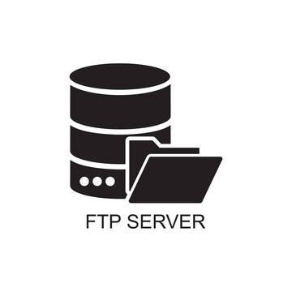
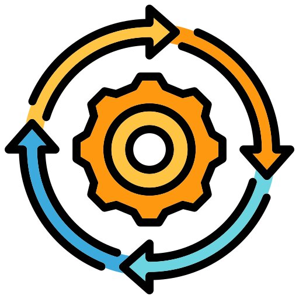

A custom-built FTP-like client-server system demonstrating core Computer Networks and Operating Systems concepts. Features concurrent client support, user authentication, file operations (LIST, RETR, STOR), separate control and data connections, dynamic port allocation, and thread-safe file handling with synchronization locks.
An AI-Powered Pronunciation Coach designed to help users master English speaking skills through real-time, AI-driven feedback. Built on Fast API backend and Tailwind CSS interface, using Wav2Vec2 model from Hugging Face for accurate speech transcription and immediate feedback.

A high-fidelity financial intelligence engine designed to automate SEC 10-K document analysis. Features a "weightless" backend architecture that offloads 1024-dim embeddings to Cohere v3 and leverages Llama 3.3 70B via Groq for sub-second reasoning. Implements a robust RAG pipeline with pgvector for semantic retrieval and batch-processing to handle complex, large-scale financial data extraction.
An automated, serverless pipeline that transforms unstructured PDF invoices into structured data. Users drop files into a modern web interface, which are then uploaded to Google Cloud Storage. A Cloud Function triggers Gemini-3-flash-preview to perform zero-shot extraction of line items, vendors, and totals, automatically appending the verified data to a Google Sheet for instant financial tracking.